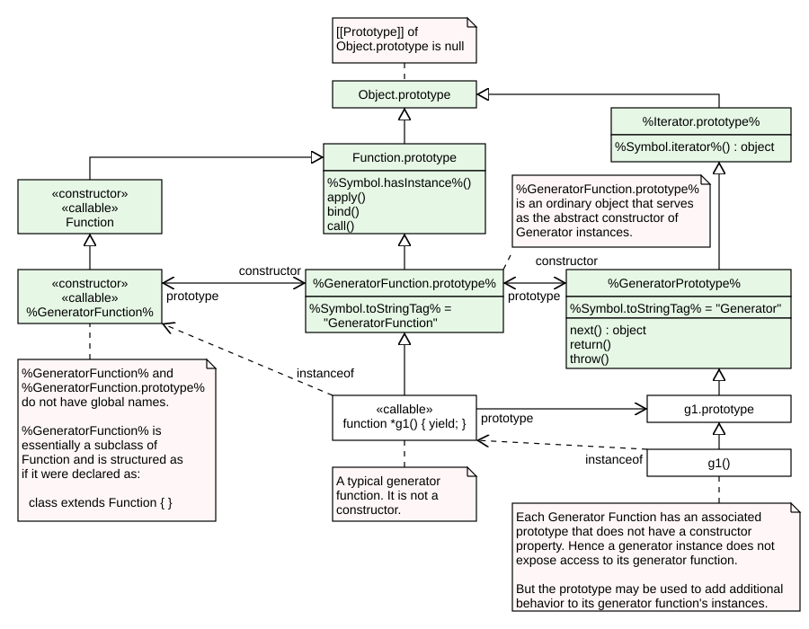

?uem/p1-90`An interface is a set of
The iterable interface includes the properties described in
| Property | Value | Requirements |
|---|---|---|
%Symbol.iterator%
|
a |
The returned object must conform to the |
An object that implements the iterator interface must include the property in
| Property | Value | Requirements |
|---|---|---|
|
|
a |
The returned object must conform to the next next |
Arguments may be passed to the next
| Property | Value | Requirements |
|---|---|---|
|
|
a |
The returned object must conform to the next return |
|
|
a |
The returned object must conform to the throw the value passed as the argument. If the throw, the returned |
Typically callers of these for-of, yield*, and array destructuring call these
The async iterable interface includes the properties described in
| Property | Value | Requirements |
|---|---|---|
%Symbol.asyncIterator% |
a |
The returned object must conform to the |
An object that implements the async iterator interface must include the properties in
| Property | Value | Requirements |
|---|---|---|
| a |
The returned promise, when fulfilled, must fulfill with an object that conforms to the Additionally, the |
Arguments may be passed to the next for-await-of statement and other common users of async iterators do not pass any arguments, so async iterator objects that expect to be used in such a manner must be prepared to deal with being called with no arguments.
| Property | Value | Requirements |
|---|---|---|
| a |
The returned promise, when fulfilled, must fulfill with an object that conforms to the Additionally, the |
|
| a |
The returned promise, when fulfilled, must fulfill with an object that conforms to the If the returned promise is fulfilled, the |
The IteratorResult interface includes the properties listed in
| Property | Value | Requirements |
|---|---|---|
|
|
a Boolean |
This is the result status of an next |
|
|
an |
If done is |
An Iterator Helper object is an
The %IteratorHelperPrototype% object:
The initial value of the
This property has the
The Iterator
This
The
The %WrapForValidIteratorPrototype% object:
The initial value of Iterator.
This property has the
This
This
The Iterator prototype object:
All objects defined in this specification that implement the
The following expression is one way that ECMAScript code can access the %Iterator.prototype% object:
Object.getPrototypeOf(Object.getPrototypeOf([][Symbol.iterator]()))This
Iterator.prototype.constructor is an
The value of the [[Getter]]
The value of the [[Setter]]
Unlike the
This
This
This
This
This
This
This
It performs the following steps when called:
This
This
This
This
This
This
This
The value of the
This
The value of the
Iterator.prototype[%Symbol.toStringTag%] is an
The value of the [[Getter]]
The value of the [[Setter]]
Unlike the
The abstract operation IteratorZip takes arguments iters (a
The %AsyncIteratorPrototype% object:
All objects defined in this specification that implement the
This
The value of the
This
The value of the
An Async-from-Sync Iterator object is an
The abstract operation CreateAsyncFromSyncIterator takes argument syncIteratorRecord (an
The %AsyncFromSyncIteratorPrototype% object:
throw throw Async-from-Sync
| Internal Slot | Type | Description |
|---|---|---|
| [[SyncIteratorRecord]] |
an |
Represents the original synchronous |
The abstract operation AsyncFromSyncIteratorContinuation takes arguments result (an Object), promiseCapability (a
The Disposable interface includes the properties described in
| Property | Value | Requirements |
|---|---|---|
%Symbol.dispose%
|
a |
Invoking this Invoking this When using a |
The AsyncDisposable interface includes the properties described in
| Property | Value | Requirements |
|---|---|---|
%Symbol.asyncDispose%
|
a |
Invoking this Invoking this When using an |
A DisposableStack is an object that can be used to contain one or more resources that should be disposed together.
Any DisposableStack object is in one of two mutually exclusive states: disposed or pending. A disposable stack d is pending if and only if neither d.dispose() nor d.move() has been invoked for d.
The DisposableStack
extends clause of a class definition. Subclass super call to the DisposableStack DisposableStack.prototype.This
The DisposableStack
The initial value of DisposableStack.prototype is the
This property has the
The DisposableStack prototype object:
This
The initial value of DisposableStack.prototype.constructor is
This
This
DisposableStack.prototype.disposed is an
This
This
The initial value of the %Symbol.dispose% property is %DisposableStack.prototype.dispose%, defined in
The initial value of the %Symbol.toStringTag% property is the String value
This property has the
DisposableStack instances are
| Internal Slot | Type | Description |
|---|---|---|
| [[DisposableState]] |
|
Governs how a disposable stack will react to incoming calls to its %Symbol.dispose% |
| [[DisposableResourceStack]] |
a |
Resources to be disposed when the disposable stack is disposed. Resources are added in the order they are initialized, and are disposed in reverse order. |
An AsyncDisposableStack is an object that can be used to contain one or more resources that should be asynchronously disposed together.
Any AsyncDisposableStack object is in one of two mutually exclusive states: disposed or pending. An async-disposable stack d is pending if and only if neither d.disposeAsync() nor d.move() has been invoked for d.
The AsyncDisposableStack
extends clause of a class definition. Subclass super call to the AsyncDisposableStack AsyncDisposableStack.prototype.This
The AsyncDisposableStack
The initial value of AsyncDisposableStack.prototype is the
This property has the
The AsyncDisposableStack prototype object:
This
The initial value of AsyncDisposableStack.prototype.constructor is
This
This async
AsyncDisposableStack.prototype.disposed is an
This
This
The initial value of the %Symbol.asyncDispose% property is %AsyncDisposableStack.prototype.disposeAsync%, defined in
The initial value of the %Symbol.toStringTag% property is the String value
This property has the
AsyncDisposableStack instances are
| Internal Slot | Type | Description |
|---|---|---|
| [[AsyncDisposableState]] |
|
Governs how a disposable stack will react to incoming calls to its %Symbol.asyncDispose% |
| [[DisposableResourceStack]] |
a |
Resources to be disposed when the disposable stack is disposed. Resources are added in the order they are initialized, and are disposed in reverse order. |
A Promise is an object that is used as a placeholder for the eventual results of a deferred (and possibly asynchronous) computation.
Any Promise is in one of three mutually exclusive states: fulfilled, rejected, and pending:
p is fulfilled if p.then(f, r) will immediately enqueue a f.
p is rejected if p.then(f, r) will immediately enqueue a r.
A promise is said to be settled if it is not pending, i.e. if it is either fulfilled or rejected.
A promise is resolved if it is settled or if it has been “locked in” to match the state of another promise. Attempting to resolve or reject a resolved promise has no effect. A promise is unresolved if it is not resolved. An unresolved promise is always in the pending state. A resolved promise may be pending, fulfilled or rejected.
A thenable is an object obj for which
A PromiseCapability Record is a
PromiseCapability Records have the fields listed in
| Field Name | Value | Meaning |
|---|---|---|
| [[Promise]] | an Object | An object that is usable as a promise. |
| [[Resolve]] |
a |
The |
| [[Reject]] |
a |
The |
IfAbruptRejectPromise is a shorthand for a sequence of algorithm steps that use a
means the same thing as:
A PromiseReaction Record is a
PromiseReaction Records have the fields listed in
| Field Name | Value | Meaning |
|---|---|---|
| [[Capability]] |
a |
The capabilities of the promise for which this record provides a reaction handler. |
| [[Type]] |
|
The [[Type]] is used when [[Handler]] is |
| [[Handler]] |
a |
The |
The abstract operation CreateResolvingFunctions takes argument toResolve (a Promise) and returns a
The abstract operation FulfillPromise takes arguments promise (a Promise) and value (an
The abstract operation NewPromiseCapability takes argument ctor (an resolve and reject resolve and reject
This abstract operation supports Promise subclassing, as it is generic on any
The abstract operation IsPromise takes argument arg (an
The abstract operation RejectPromise takes arguments promise (a Promise) and reason (an
The abstract operation TriggerPromiseReactions takes arguments reactions (a
The
The default implementation of HostPromiseRejectionTracker is to return
HostPromiseRejectionTracker is called in two scenarios:
A typical implementation of HostPromiseRejectionTracker might try to notify developers of unhandled rejections, while also being careful to notify them if such previous notifications are later invalidated by new handlers being attached.
If operation is
The abstract operation NewPromiseReactionJob takes arguments reaction (a
The abstract operation NewPromiseResolveThenableJob takes arguments promiseToResolve (a Promise), thenable (an Object), and then (a
The Promise
extends clause of a class definition. Subclass super call to the Promise Promise and Promise.prototype.This
The executor argument must be a
The resolve
The reject
The resolve and reject
The Promise
This
This
The abstract operation GetPromiseResolve takes argument promiseCtor (a
The abstract operation PerformPromiseAll takes arguments iteratorRecord (an
This
This
The abstract operation PerformPromiseAllSettled takes arguments iteratorRecord (an
This AggregateError holding the rejection reasons if all of the given promises are rejected. It resolves all elements of the passed
This Promise
The abstract operation PerformPromiseAny takes arguments iteratorRecord (an
The initial value of Promise.prototype is the
This property has the
This
If the iterable argument yields no values or if none of the promises yielded by iterable ever settle, then the pending promise returned by this
This resolve
The abstract operation PerformPromiseRace takes arguments iteratorRecord (an
This
This
This
This
The abstract operation PromiseResolve takes arguments ctor (an Object) and resolution (an
This
This
This resolve and reject
Promise[%Symbol.species%] is an
The value of the
Promise
The Promise prototype object:
This
The initial value of Promise.prototype.constructor is
This
This
The abstract operation PerformPromiseThen takes arguments promise (a Promise), onFulfilled (an
The initial value of the
This property has the
Promise instances are
| Internal Slot | Type | Description |
|---|---|---|
| [[PromiseState]] |
|
Governs how a promise will react to incoming calls to its then |
| [[PromiseResult]] |
an |
The value with which the promise has been fulfilled or rejected, if any. |
| [[PromiseFulfillReactions]] |
a |
|
| [[PromiseRejectReactions]] |
a |
|
| [[PromiseIsHandled]] | a Boolean | Indicates whether the promise has ever had a fulfillment or rejection handler; used in unhandled rejection tracking. |
GeneratorFunctions are

The GeneratorFunction
Function.GeneratorFunction (…) is equivalent to the object creation expression new GeneratorFunction (…) with the same arguments.extends clause of a class definition. Subclass super call to the GeneratorFunction The last argument (if any) specifies the body (executable code) of a generator
This
The GeneratorFunction
The initial value of GeneratorFunction.prototype is the
This property has the
The GeneratorFunction prototype object:
The initial value of GeneratorFunction.prototype.constructor is
This property has the
The initial value of GeneratorFunction.prototype.prototype is
This property has the
The initial value of the
This property has the
Every GeneratorFunction instance is an ECMAScript
Each GeneratorFunction instance has the following
The specification for the
The specification for the
Whenever a GeneratorFunction instance is created another
This property has the
Unlike
AsyncGeneratorFunctions are
The AsyncGeneratorFunction
Function.AsyncGeneratorFunction (...) is equivalent to the object creation expression new AsyncGeneratorFunction (...) with the same arguments.extends clause of a class definition. Subclass super call to the AsyncGeneratorFunction The last argument (if any) specifies the body (executable code) of an async generator
This
The AsyncGeneratorFunction
The initial value of AsyncGeneratorFunction.prototype is the
This property has the
The AsyncGeneratorFunction prototype object:
The initial value of AsyncGeneratorFunction.prototype.constructor is
This property has the
The initial value of AsyncGeneratorFunction.prototype.prototype is
This property has the
The initial value of the
This property has the
Every AsyncGeneratorFunction instance is an ECMAScript
Each AsyncGeneratorFunction instance has the following
The value of the
This property has the
The specification for the
Whenever an AsyncGeneratorFunction instance is created, another
This property has the
Unlike
A Generator is created by calling a generator
Generator instances directly inherit properties from the initial value of the
The %GeneratorPrototype% object:
The initial value of .constructor is
This property has the
This
This
The initial value of the
This property has the
Generator instances are initially created with the internal slots described in
| Internal Slot | Type | Description |
|---|---|---|
| [[GeneratorState]] |
|
The current execution state of the generator. |
| [[GeneratorContext]] |
an |
The |
| [[GeneratorBrand]] |
a String or |
A brand used to distinguish different kinds of generators. The [[GeneratorBrand]] of generators declared by |
The abstract operation GeneratorStart takes arguments gen (a Generator) and genBody (a
The abstract operation GeneratorValidate takes arguments gen (an
The abstract operation GeneratorResume takes arguments gen (an
The abstract operation GeneratorResumeAbrupt takes arguments gen (an
The abstract operation GetGeneratorKind takes no arguments and returns
The abstract operation GeneratorYield takes argument iteratorResult (an Object that conforms to the
The abstract operation Yield takes argument arg (an
The abstract operation CreateIteratorFromClosure takes arguments closure (an
An AsyncGenerator is created by calling an async generator
AsyncGenerator instances directly inherit properties from the initial value of the
The %AsyncGeneratorPrototype% object:
The initial value of .constructor is
This property has the
The initial value of the
This property has the
AsyncGenerator instances are initially created with the internal slots described below:
| Internal Slot | Type | Description |
|---|---|---|
| [[AsyncGeneratorState]] | The current execution state of the async generator. | |
| [[AsyncGeneratorContext]] | an |
The |
| [[AsyncGeneratorQueue]] | a |
|
| [[GeneratorBrand]] | a String or |
A brand used to distinguish different kinds of async generators. The [[GeneratorBrand]] of async generators declared by |
An AsyncGeneratorRequest is a
They have the following fields:
| Field Name | Value | Meaning |
|---|---|---|
| [[Completion]] | a |
The |
| [[Capability]] | a |
The promise capabilities associated with this request. |
The abstract operation AsyncGeneratorStart takes arguments gen (an AsyncGenerator) and genBody (a
The abstract operation AsyncGeneratorValidate takes arguments gen (an
The abstract operation AsyncGeneratorEnqueue takes arguments gen (an AsyncGenerator), completion (a
The abstract operation AsyncGeneratorCompleteStep takes arguments gen (an AsyncGenerator), completion (a
The abstract operation AsyncGeneratorResume takes arguments gen (an AsyncGenerator) and completion (a
The abstract operation AsyncGeneratorUnwrapYieldResumption takes argument resumptionValue (a
The abstract operation AsyncGeneratorYield takes argument arg (an
The abstract operation AsyncGeneratorAwaitReturn takes argument gen (an AsyncGenerator) and returns
The abstract operation AsyncGeneratorDrainQueue takes argument gen (an AsyncGenerator) and returns
AsyncFunctions are
The AsyncFunction
Function.AsyncFunction(…) is equivalent to the object creation expression new AsyncFunction(…) with the same arguments.extends clause of a class definition. Subclass super call to the AsyncFunction The last argument (if any) specifies the body (executable code) of an async
This
The AsyncFunction
The initial value of AsyncFunction.prototype is the
This property has the
The AsyncFunction prototype object:
The initial value of AsyncFunction.prototype.constructor is
This property has the
The initial value of the
This property has the
Every AsyncFunction instance is an ECMAScript
Each AsyncFunction instance has the following
The specification for the
The specification for the
The abstract operation AsyncFunctionStart takes arguments promiseCapability (a
The abstract operation AsyncBlockStart takes arguments promiseCapability (a
The abstract operation Await takes argument arg (an